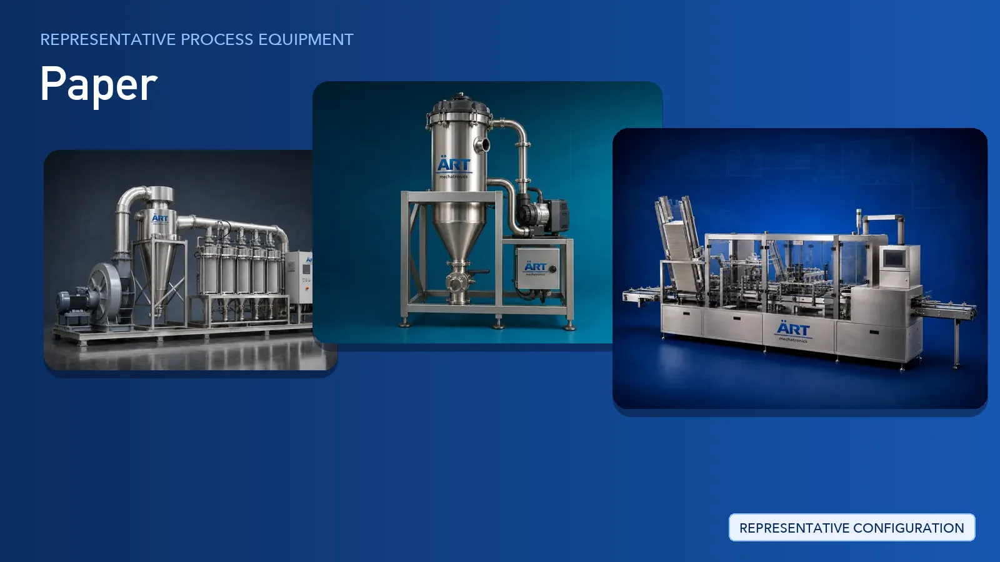

Book Processing Plant & Machinery Solutions
Book is processed within the paper industry, where raw material is cleaned, processed and packed into a consistent, market-ready product.

Complete Book Process Flow
Paper reels, board bundles and waste paper bales are received and moved into the plant and between production floors.
Reduces manual lifting and damage to reels and board.
Paper dust, loose fibre and edge trim generated at cutting, slitting, sheeting, creasing and converting stations are captured at source.
Ensures:
- Cleaner machines and work areas
- Fewer dust-related print and coating defects
- Safer handling of combustible paper dust
- Support for pollution control compliance
Collected trim, shredded rejects and waste paper are transported to a central point and compacted for recycling or resale.
Turns loose trim into compact, handleable bales.
Sheets, reams, rolls and cartons are counted, stacked and given their first wrap or pack.
Supports:
- Consistent pack counts
- Protection from moisture and handling damage
- Retail-ready presentation
Primary packs are collated into master cartons, coded, weighed and checked before dispatch.
Ensures correct pack counts, batch coding and traceability.
Cartons and bundles are stacked onto pallets and secured for warehousing and transport.
Stabilises loads for storage and export.
Extraction, conveying, packing and palletising equipment is interlocked and monitored from a common control platform.
Provides interlocks, line coordination and process visibility.
Machinery Required for Book Plant
Turnkey Book Plant Solutions
ART Mechatronics offers turnkey supporting-plant solutions for paper mills and converting units, including:
- Extraction system design & ducting layout
- Dust, fibre and trim collection networks
- Pneumatic trim conveying and baling systems
- Reel, ream and carton handling equipment
- Counting, stacking and wrapping systems
- Secondary packing and palletising line integration
- Automation & control panels
- Installation & commissioning
- After-sales support
We customize solutions based on:
- Product type (tissue, kraft, corrugated, mono carton, copier paper)
- Existing machine layout and floor levels
- Trim volume and dust characteristics
- Pack format and dispatch requirements
- Automation level
Why Choose ART Mechatronics for Book
- Specialists in dust, fibre and trim extraction for converting lines
- Centralised extraction networks designed around existing machine layouts
- Pneumatic trim conveying integrated with baling
- End-of-line counting, packing, palletising and wrapping systems
- Single-point automation across extraction, conveying and packing
- Turnkey design, installation, commissioning and after-sales support
- Manufacturing and project support across India, UAE and Thailand
Machinery in a Book plant
Where it's used
Get pricing & specs for the Book plant
Share the product, target capacity, current process and plant location. These details help our engineers discuss the right machine or line configuration.
One partner, from design to start-up
ART Mechatronics designs, manufactures, installs and commissions your Book plant solution with regional presence in India, UAE and Thailand.